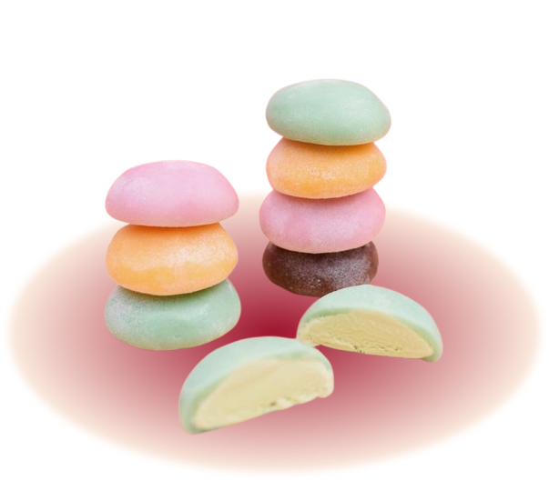
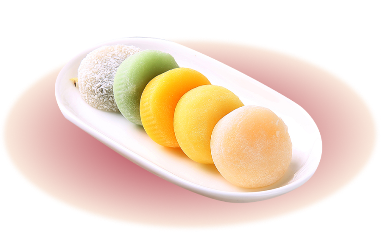
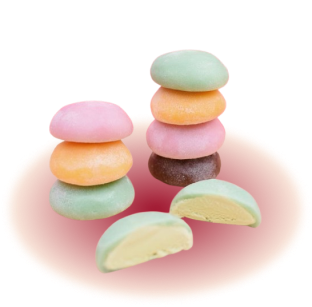
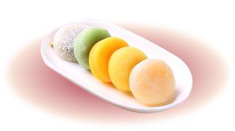

Berdiri sejak tahun 2024, Yumochi adalah brand yang menghadirkan pengalaman mochi lezat dengan cita rasa khas dan kualitas terbaik. Kami berkomitmen untuk menyajikan mochi yang lembut, kenyal, dan penuh dengan rasa yang autentik, memberikan kenikmatan dalam setiap gigitan.


Dibuat dari bahan-bahan pilihan dan dikreasikan dengan berbagai varian rasa, Yumochi menjadi pilihan sempurna untuk menikmati momen manis di setiap kesempatan. Kami percaya bahwa setiap mochi yang kami buat mampu menghadirkan kebahagiaan kecil yang tak terlupakan bagi semua pecinta makanan. Yumochi, bukan sekadar mochi, tapi pengalaman rasa yang akan membuatmu jatuh cinta!
About Us

Berdiri sejak tahun 2024, Yumochi adalah brand yang menghadirkan pengalaman mochi lezat dengan cita rasa khas dan kualitas terbaik. Kami berkomitmen untuk menyajikan mochi yang lembut, kenyal, dan penuh dengan rasa yang autentik, memberikan kenikmatan dalam setiap gigitan.

Dibuat dari bahan-bahan pilihan dan dikreasikan dengan berbagai varian rasa, Yumochi menjadi pilihan sempurna untuk menikmati momen manis di setiap kesempatan. Kami percaya bahwa setiap mochi yang kami buat mampu menghadirkan kebahagiaan kecil yang tak terlupakan bagi semua pecinta makanan. Yumochi, bukan sekadar mochi, tapi pengalaman rasa yang akan membuatmu jatuh cinta!